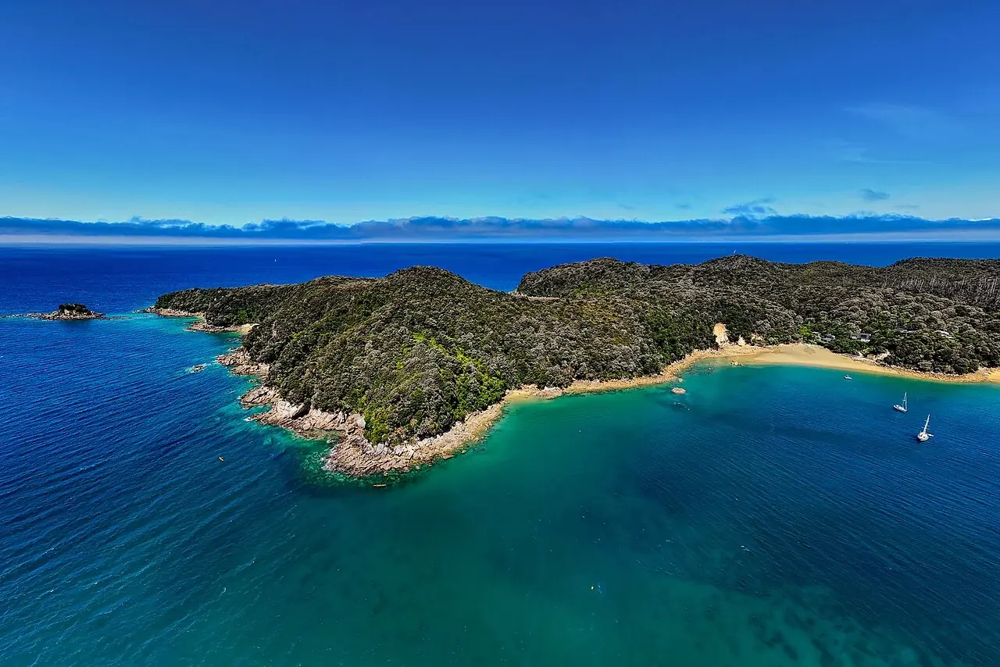

Abel Tasman
Tasman, Nouvelle-Zélande · kayak

Au nord de l’île du Sud, le parc national Abel Tasman borde une succession de baies boisées. Les sorties en kayak permettent de relier certaines plages et d’associer navigation et marche côtière.
- Lieu
- Tasman, Nouvelle-Zélande
- Niveau
- Variable selon les conditions
- Activités
- kayak
- Type d'eau
- Mer / océan
- Coordonnées
- -40.95, 173.05 (position approximative du secteur)
Ouvrir dans Ocean Buddy Télécharger sur l'App Store
Source : Tourism New Zealand.